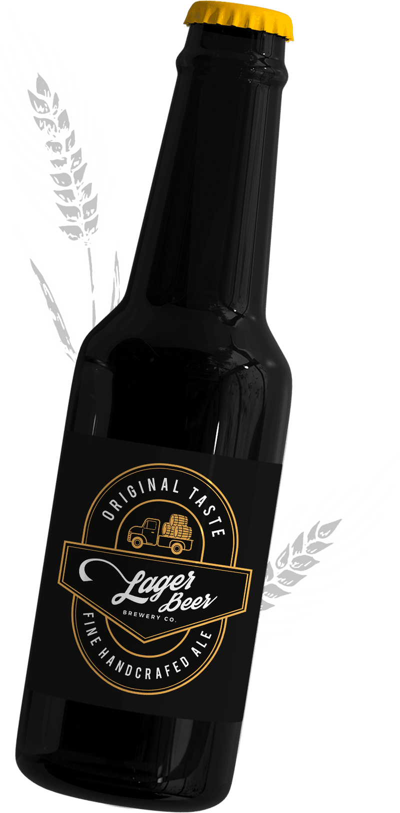
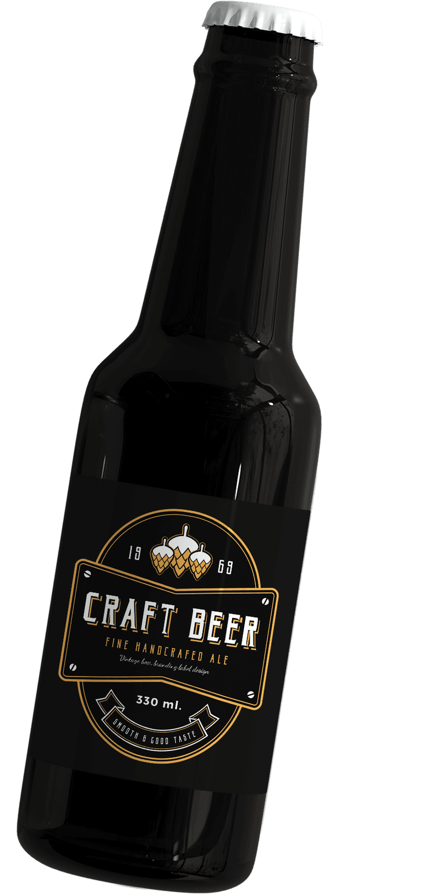
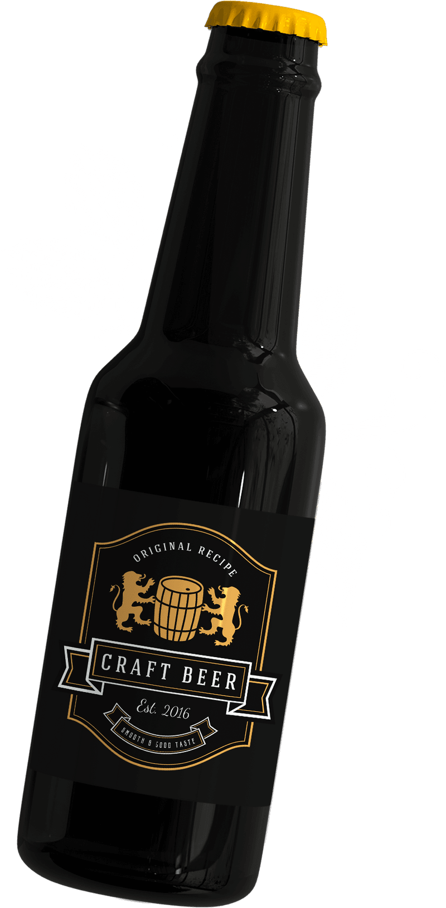

-

Lager beer
This classic bottled beer features a wheat aroma and mild taste.
ABV-4.2%
IBU-12
Light,mild,withvery little bitterness
-

Bitter
"England's favorite beer" is a great choice for those who like
dark varieties of beer.
ABV-4.6%
IBU-40
Bitter,malty,with a slight aftertaste of toasts
-

Ipa
Ideal for those who prefer strong and bitter beer with rich
aroma.
ABV-8%
IBU-80
Very bitter, hoppy,with grainy notes